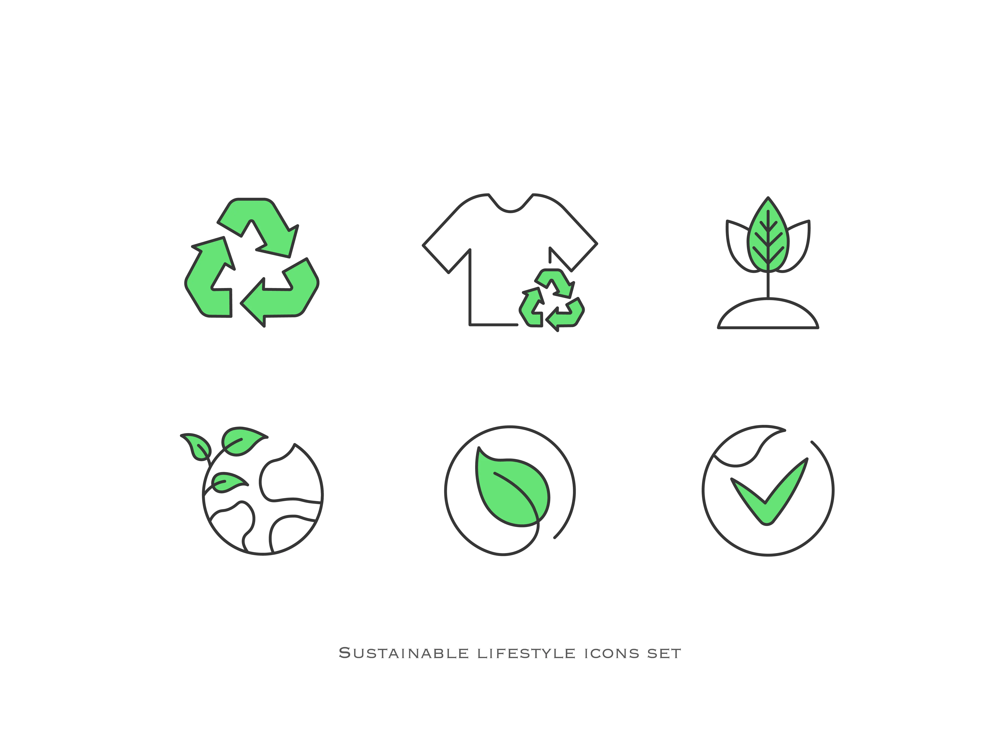
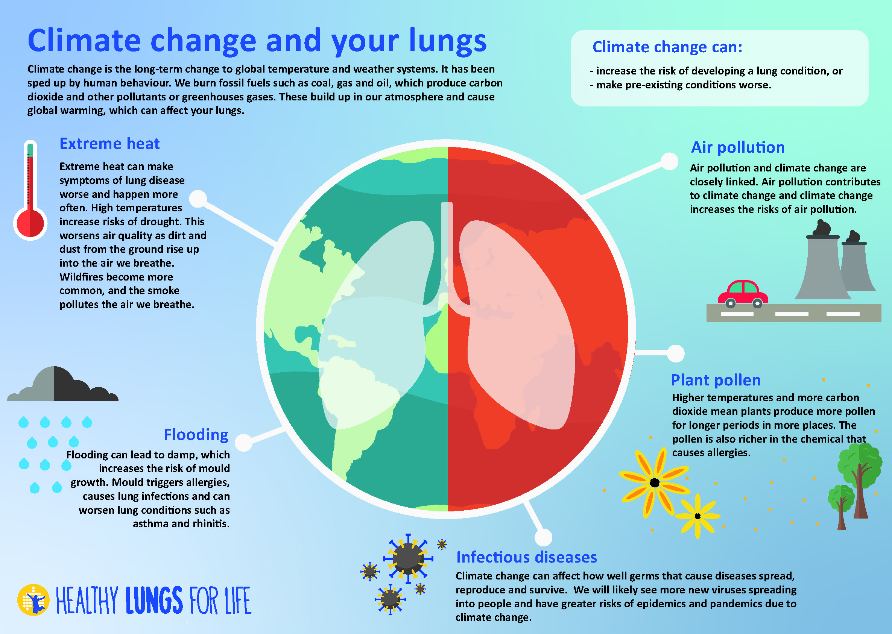

Energia hatékonyság
Az energia hatékonyságának régen nem tulajdonítottak akkora figyelmet, addig amíg előnem jöttek a problémák pl: üvegházhatás

Mi is az üvgházhatás?fddsdsafdafdsafsda
Az üvegházhatás egy természetes folyamat. Az üvegházhatás az emberi beavatkozások felgyorsítják és ez veszélyezteti az embereket, állatokat, növényeket.
